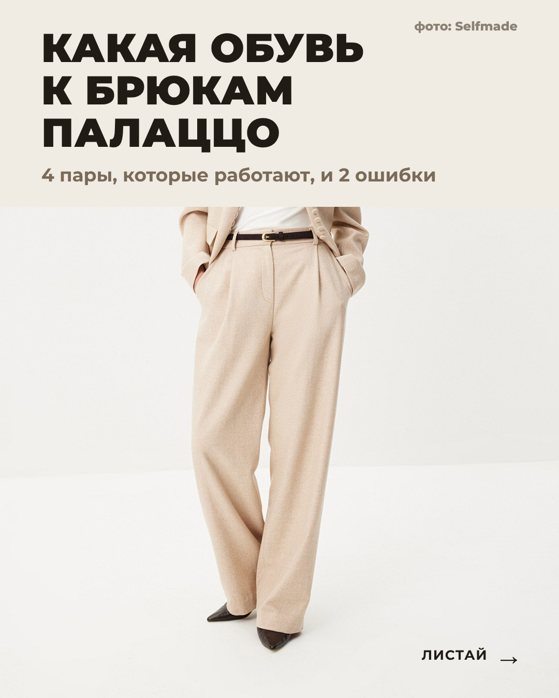
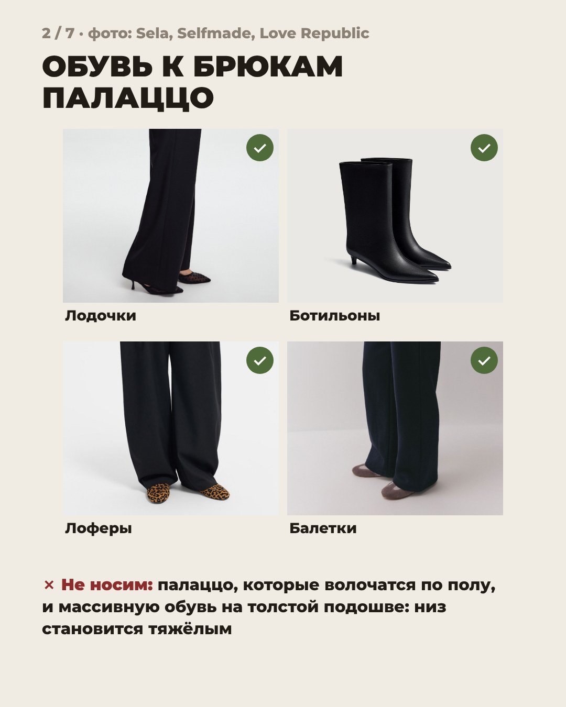
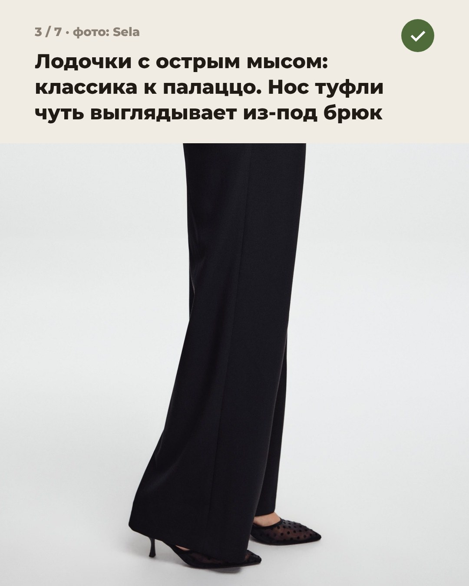
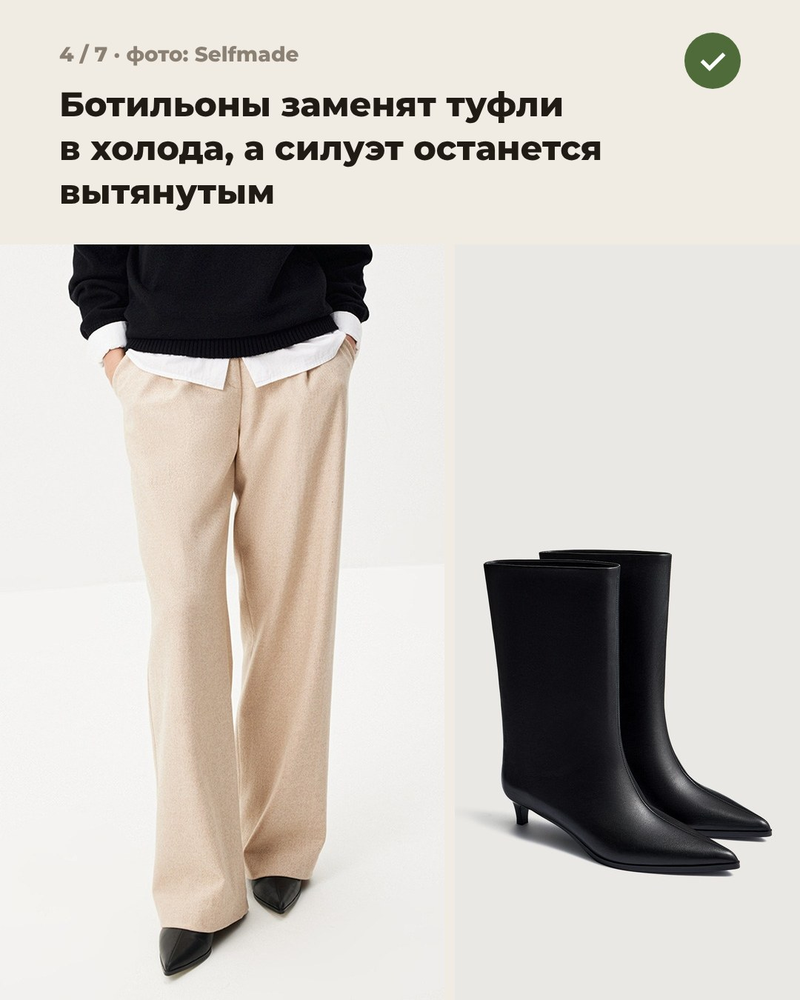
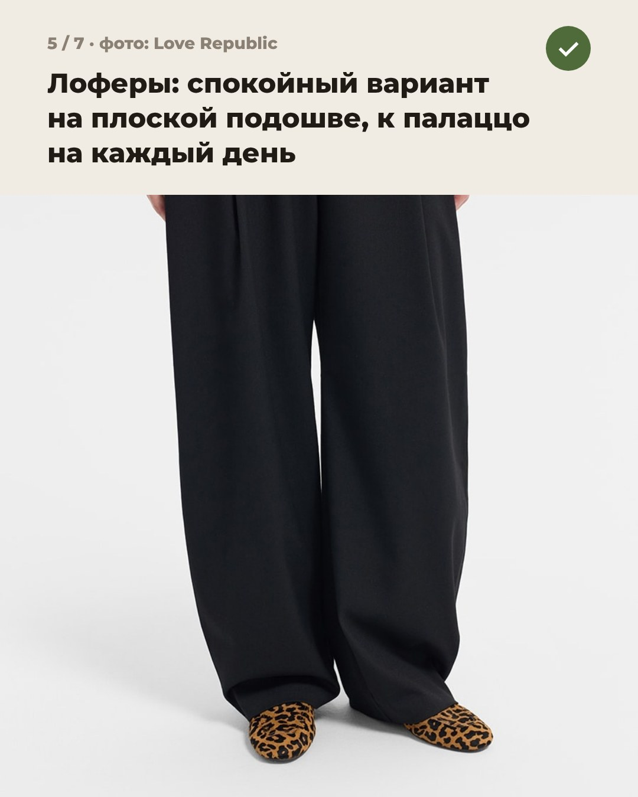
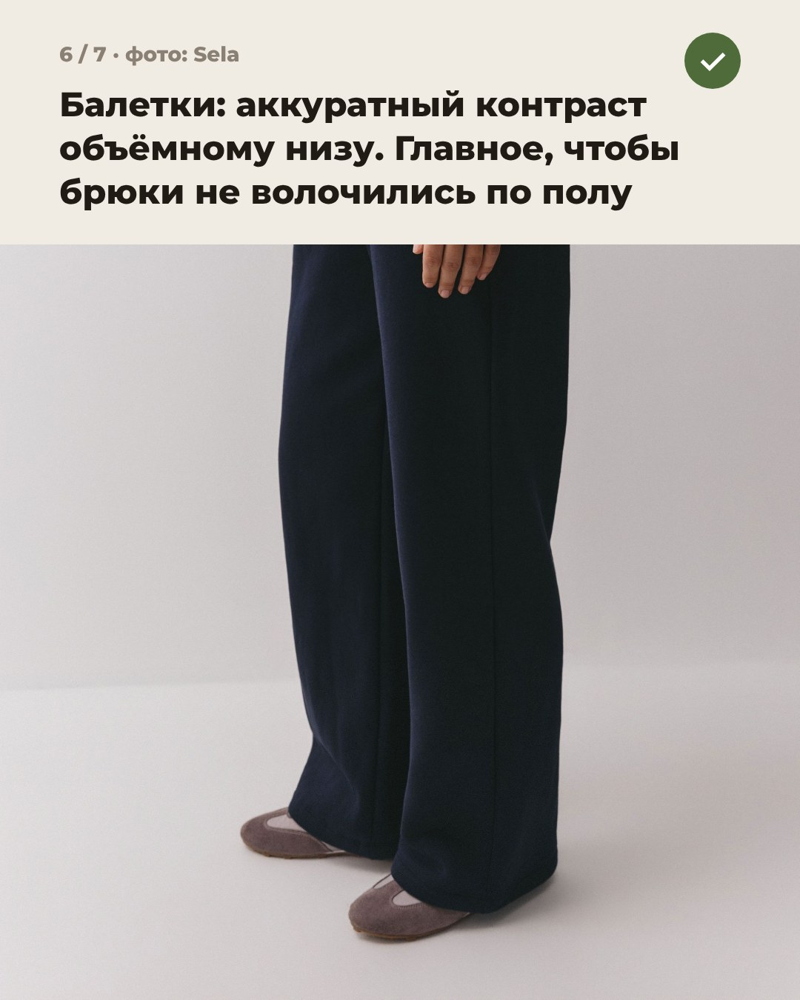
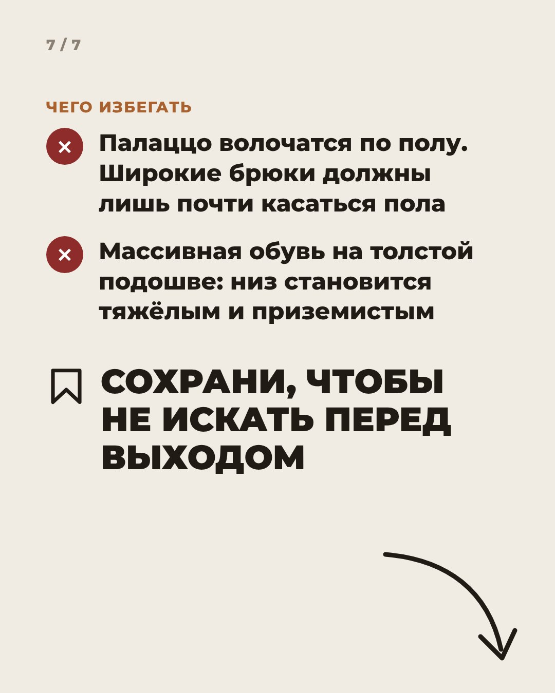

Иirina_sitko23







irina_sitko23 Палаццо — те самые широкие брюки в пол, а главный вопрос к ним всегда один: что обуть? Собрала 4 пары, которые точно работают этой осенью, и 2 ошибки, из-за которых образ разваливается. Все фото из карточек Selfmade, Sela и Love Republic.
Главное правило: широкие брюки почти касаются пола, из-под штанины выглядывает только нос обуви.
Сохрани, чтобы не искать перед выходом